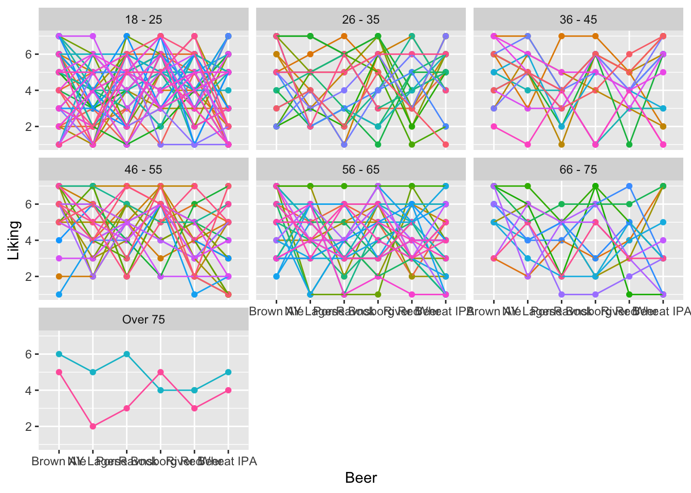
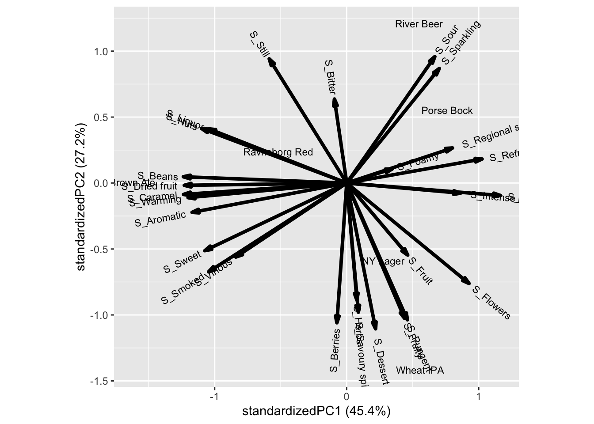
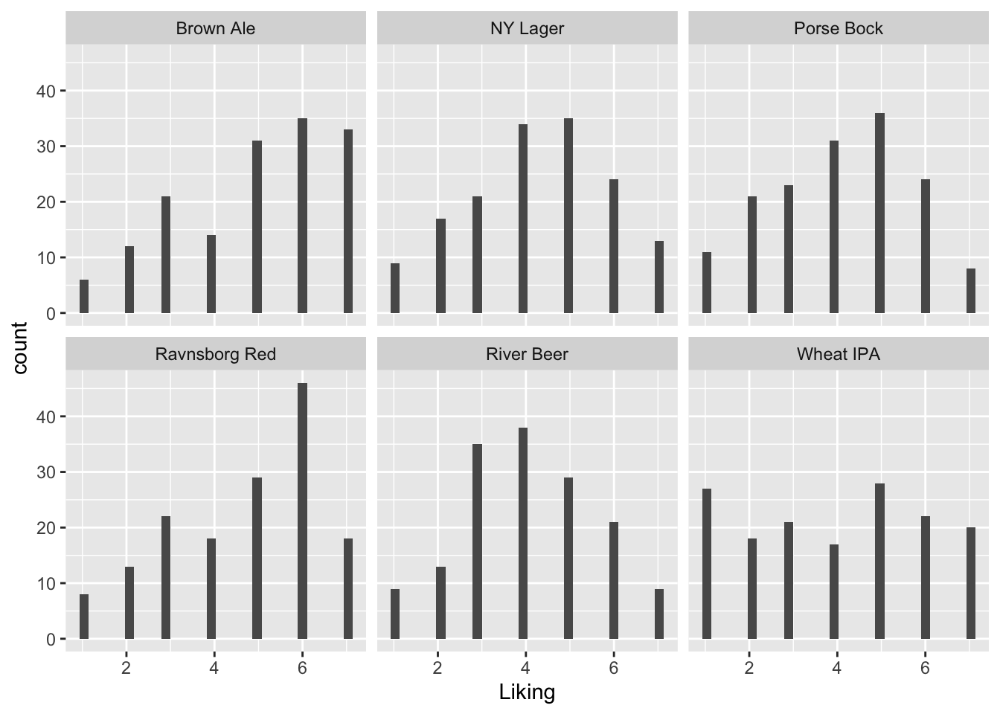

Chapter 15 Hedonic rating (e.g. liking scores)
An evaluation of how much we like a food or drink is a hedonic response. Often this is given as a number on a scale, or by checking a category box with a description, such as the 9-point hedonic scale. For data analysis, the boxes are made numerical, with the assumption the there is equidistance between the meaning of the category labels, i.e dislike extremely and dislike very much is as different as dislike a little and neutral. The original English language anchors for the 9-point hedonic scale was develop and validated on tests using approximately 5500 American soldiers in the beginning of the 1950’s (Lawless & Heymann, Chapter 7 Scaling, 2010). There are a number of validated scales, including visual smiley scales for children. Dependent on the respondent 5, 7 or 9 point scales are used.
Most often we want to know if the hedonic response is significantly different (not just different by chance) depending on the samples. We might also want to know if other factors have an influence on the hedonic rating. e.g. household income or sex. We also want to know what are the actual differences are in numerical size. All this requires different statistical estimates.
15.1 Plotting liking scores
For the beer data we have the liking in a long matrix.
A histogram of the likings shows that some are symmetric ( NY Lager, River Beer and to some extend Porse Bock), while Brown Ale and Ravnsborg Red is skeew, and Wheat IPA is uniform.
15.1.1 PCA of hedonic ratings
PCA is a nice tool to get overview of structure in data. Here we explicitly are interested in hedonic liking of the 6 beer types, and whether there are certain beer-drinker profiles, such as some prefer dark beer, while others like wheat or pilsner.
The liking data is in long format, and as we want to see correlation between different beers we need to wrap the liking into wide format, this can be done using spread from tidyverse. Further, there is incomplete liking data, and here we only sustain hedonic answers from consumers with all 6 liking answers. This filter can be computed in different ways, here drop_na() is used.
library(data4consumerscience)
library(tidyverse)
data("beerliking")
xbeerliking <- beerliking %>%
spread(Beer,Liking) %>% # make into wide format
drop_na()PCA is computed on the liking columns of this matrix

Those who like Ravnsborg red also likes NY Lager and to some extend Brown ale, while Porse Bock and Wheat IPA also attracts the same consumers.
In general there is a trend towards all liking score being positively correlated, meaning, that costumers overall like (or dis like) beer. This can both be a real phenomena, but also an artifact of the consumers not using the scale in a similar fashion. It is a very common phenomena for sensory and hedonic data.
We can glue on demographic characteristics, such as age, gender, etc., as well as questions on interest in food and beer on this figure to understand the consumer population.


In general, the classical demographics do not relate to liking patterns, as shown by gender above. Try the others to confirm.
For interest in food and beer there are patterns. One example is the Beer knowledge with higher liking scores for more beer knowledge. Similar intuitive patterns can be seen for some of the other characteristics.
15.2 Simple mixed models
In the following plot each liking score is connected within consumer across the beer types. The facet (according to Age) is just to avoid overplotting.
Here, there is a trend towards, if you rate one beer high, the other likings within that consumer will also be high.
ggplot(data = beerliking, aes(Beer,Liking, group = Consumer.ID, color = Consumer.ID)) +
geom_point() +
geom_line() +
theme(legend.position = 'none') +
facet_wrap(~Age)
Mixed models are used when there is repetitions in the response due to (here) the person tasting more than one product.
To fit a mixed model, we do the following: First, we load the packages lmerTest and lme4, using library(). These packeges are used for fitting linear and generalized linear mixed-effects models in R.
Then, we fit the model: mdl <- lmer(data = beerliking, Liking ~ Beer + (1|Consumer.ID))
This line fits a linear mixed-effects model to the data in the object beerliking. The formula Liking ~ Beer + (1|Consumer.ID) specifies the model structure:
- Liking is the response variable (dependent variable).
- Beer is a predictor variable (independent variable) representing different types of beer.
- (1|Consumer.ID) specifies a random intercept for each unique value of Consumer.ID.
This accounts for potential variability between different consumers that may affect the liking score.
- The resulting model is stored in the object mdl.
summary(mdl) generates a summary of the linear mixed-effects model stored in the object mdl. This summary contains a lot of information, but we are mainly interested in the information regarding the random effects, as we will look at the fixed effects at a later stage of the analysis. (This is because the information about the fixed effects in this summary is conducting t-test based on the order of the data, which we do not want to do).
When looking at the Random effects, we see that the residual uncertainty (Std.Dev.) is \(1.63\) on the 1-7 Likert scale, while the uncertainty between consumers is \(0.57\). This implies that the uncertainty between two ratings is higher when from two different consumers, compared to two ratings from the same consumer.
library(lmerTest)
library(lme4)
mdl <- lmer(data = beerliking, Liking ~ Beer + (1|Consumer.ID))
summary(mdl)## Linear mixed model fit by REML. t-tests use Satterthwaite's method ['lmerModLmerTest']
## Formula: Liking ~ Beer + (1 | Consumer.ID)
## Data: beerliking
##
## REML criterion at convergence: 3606
##
## Scaled residuals:
## Min 1Q Median 3Q Max
## -2.52447 -0.73529 0.08622 0.74232 2.01132
##
## Random effects:
## Groups Name Variance Std.Dev.
## Consumer.ID (Intercept) 0.3242 0.5694
## Residual 2.6615 1.6314
## Number of obs: 920, groups: Consumer.ID, 155
##
## Fixed effects:
## Estimate Std. Error df t value Pr(>|t|)
## (Intercept) 4.32012 0.07067 154.58384 61.128 < 2e-16 ***
## Beer1 0.58163 0.12075 763.97341 4.817 1.76e-06 ***
## Beer2 -0.05964 0.12040 762.72306 -0.495 0.62048
## Beer3 -0.25523 0.12007 762.19954 -2.126 0.03385 *
## Beer4 0.34866 0.12007 762.19954 2.904 0.00379 **
## Beer5 -0.25512 0.12013 764.89744 -2.124 0.03401 *
## ---
## Signif. codes: 0 '***' 0.001 '**' 0.01 '*' 0.05 '.' 0.1 ' ' 1
##
## Correlation of Fixed Effects:
## (Intr) Beer1 Beer2 Beer3 Beer4
## Beer1 0.003
## Beer2 0.001 -0.201
## Beer3 -0.001 -0.200 -0.200
## Beer4 -0.001 -0.200 -0.200 -0.199
## Beer5 -0.003 -0.201 -0.200 -0.199 -0.199We can use this model to evaluate the effect of the different beers, using the anova-function.
This yields a p-value far below the significance level (Pr(>F) = 1.175e-07), and suggests that the average liking is different for at least 2 of the different beers. To investigate how they are all different compared to each other, we continue with some post hoc tests.
## Type III Analysis of Variance Table with Satterthwaite's method
## Sum Sq Mean Sq NumDF DenDF F value Pr(>F)
## Beer 110.52 22.105 5 763.12 8.3054 1.175e-07 ***
## ---
## Signif. codes: 0 '***' 0.001 '**' 0.01 '*' 0.05 '.' 0.1 ' ' 115.2.1 Post hoc test
The overall anova result implies that the 6 beers are NOT equal in terms of liking, but some may be similar.
This can be investigated by computing pairwise contrasts using the multcomp package, using what is called Tukey’s Honest Significant Difference (Tukey HSD).
To calculate pairwise comparisons between e.g. samples and find letter-based representation you need a the package multcomp, and the pairwise comparison is conduted as follow:
mdlis the model that we defined in the above part of the chapter, explaining the relationship between Liking and Beer(-type).glht()is a function from themultcomppackage that stands for “general linear hypothesis test.” It is used to perform hypothesis tests and obtain confidence intervals for linear combinations of model parameters. In this case, we’re specifying the linear function using thelinfctparameter.mcp(Beer = "Tukey")is defining the multiple comparison contrast. Here we specify, that we are interested in comparing means related to the variableBeerusing Tukey’s method.
We then visualize the pairwise comparison in two different ways:
- summary() is used to obtain a summary of the results of the hypothesis tests. Here, all the pairwise comparisons are shown, with confidence intervals as well as adjusted p-values for each pairwise comparison.
cld()is used to create what is called a compact letter display (CLD), which is a neat way of showing which groups are significantly different from each other. Samples with the same letters are not significantly different.
Here, we can see, that Brown Ale has scored significantly higher than Wheat IPA, since they have been assigned with c and a respectively. But the Brown Ale is not significantly different from the Ravnsborg Red, as they both have been assigned with a’s.
##
## Simultaneous Tests for General Linear Hypotheses
##
## Multiple Comparisons of Means: Tukey Contrasts
##
##
## Fit: lmer(formula = Liking ~ Beer + (1 | Consumer.ID), data = beerliking)
##
## Linear Hypotheses:
## Estimate Std. Error z value Pr(>|z|)
## NY Lager - Brown Ale == 0 -0.6412670 0.1869011 -3.431 0.00794 **
## Porse Bock - Brown Ale == 0 -0.8368593 0.1865731 -4.485 < 0.001 ***
## Ravnsborg Red - Brown Ale == 0 -0.2329631 0.1865731 -1.249 0.81275
## River Beer - Brown Ale == 0 -0.8367425 0.1866293 -4.483 < 0.001 ***
## Wheat IPA - Brown Ale == 0 -0.9419206 0.1869011 -5.040 < 0.001 ***
## Porse Bock - NY Lager == 0 -0.1955923 0.1862448 -1.050 0.90077
## Ravnsborg Red - NY Lager == 0 0.4083038 0.1862448 2.192 0.24119
## River Beer - NY Lager == 0 -0.1954755 0.1863008 -1.049 0.90113
## Wheat IPA - NY Lager == 0 -0.3006536 0.1865230 -1.612 0.59052
## Ravnsborg Red - Porse Bock == 0 0.6038961 0.1859164 3.248 0.01464 *
## River Beer - Porse Bock == 0 0.0001168 0.1859721 0.001 1.00000
## Wheat IPA - Porse Bock == 0 -0.1050613 0.1862448 -0.564 0.99328
## River Beer - Ravnsborg Red == 0 -0.6037793 0.1859721 -3.247 0.01485 *
## Wheat IPA - Ravnsborg Red == 0 -0.7089574 0.1862448 -3.807 0.00194 **
## Wheat IPA - River Beer == 0 -0.1051781 0.1863008 -0.565 0.99326
## ---
## Signif. codes: 0 '***' 0.001 '**' 0.01 '*' 0.05 '.' 0.1 ' ' 1
## (Adjusted p values reported -- single-step method)## Brown Ale NY Lager Porse Bock Ravnsborg Red River Beer Wheat IPA
## "a" "bc" "c" "ab" "c" "c"15.3 Multivariable models
In the example above, only the impact of the different beers is evaluated, however, the liking scores may also depend on background information such as gender, age, … as well as attitude towards beer and food. Further, is there any of the background variables that attenuate or make the differences between the beers stronger? These questions can be investigated by models including several explanatory variables as well as interaction terms.
15.3.1 Additive models
This can be included in the models as a sequence of explanatory variables.
Given a set of possible explanatory variables, there is two ways to include them in the model.
Forward step-wise Selection and Backward Step-wise Elimination.
For both, the principle is simple and intuitive.
In the forward procedure each variable is added to the model, and the strongest one (in terms of the lowest p-value) is kept.
In the backward procedure all variables are added to the model and the least important one (in terms of the largest p-value) is removed.
Both procedures stop when the model is not going to improve by adding or eliminating explanatory variables, and the final model will only contain the significant variables.
In the beer dataset we would like to know which of the explanatory variables are related to liking the most.
A large model with all explanatory variables is constructed
mdl_be <- lmer(data = beerliking, Liking ~ Beer + Gender + Age + Income +
Householdsize + `Beer types/month` + `Interest in food` +
neophilia + `Interest in beer` + `Beer knowledge` +
`Ingredients/labels` + `Future interest in beer` +
(1|Consumer.ID))
anova(mdl_be)## Type III Analysis of Variance Table with Satterthwaite's method
## Sum Sq Mean Sq NumDF DenDF F value Pr(>F)
## Beer 110.799 22.1597 5 762.75 8.3223 1.133e-07 ***
## Gender 0.093 0.0932 1 125.57 0.0350 0.851886
## Age 20.946 3.4911 6 129.73 1.3111 0.256695
## Income 47.126 7.8544 6 126.31 2.9498 0.009962 **
## Householdsize 7.385 1.2309 6 127.84 0.4623 0.835121
## `Beer types/month` 17.519 4.3797 4 125.10 1.6448 0.167136
## `Interest in food` 0.015 0.0149 1 127.62 0.0056 0.940561
## neophilia 2.730 2.7305 1 125.27 1.0255 0.313179
## `Interest in beer` 1.092 1.0923 1 125.69 0.4102 0.523029
## `Beer knowledge` 1.019 1.0186 1 127.44 0.3825 0.537350
## `Ingredients/labels` 1.742 1.7424 1 130.36 0.6544 0.420024
## `Future interest in beer` 8.480 8.4798 1 128.45 3.1847 0.076692 .
## ---
## Signif. codes: 0 '***' 0.001 '**' 0.01 '*' 0.05 '.' 0.1 ' ' 1From this, Interest in food is the least significant one (Pr(>F) = 0.940561), and is hence removed.
A sequential removal of the non-significant variables at a \(p > 0.1\) level leads to the following model:
mdl_be_red <- lmer(data = beerliking, Liking ~ Beer + Age + Income +
`Beer types/month` + `Beer knowledge` +
`Future interest in beer` +
(1|Consumer.ID))
anova(mdl_be_red)## Type III Analysis of Variance Table with Satterthwaite's method
## Sum Sq Mean Sq NumDF DenDF F value Pr(>F)
## Beer 110.397 22.079 5 763.19 8.2936 1.206e-07 ***
## Age 31.657 5.276 6 140.10 1.9819 0.0721622 .
## Income 53.130 8.855 6 136.92 3.3261 0.0043400 **
## `Beer types/month` 22.526 5.631 4 135.80 2.1153 0.0822411 .
## `Beer knowledge` 7.624 7.624 1 136.44 2.8638 0.0928735 .
## `Future interest in beer` 32.101 32.101 1 136.94 12.0579 0.0006906 ***
## ---
## Signif. codes: 0 '***' 0.001 '**' 0.01 '*' 0.05 '.' 0.1 ' ' 1The results can be interpreted from the estimates:
## Linear mixed model fit by REML. t-tests use Satterthwaite's method ['lmerModLmerTest']
## Formula: Liking ~ Beer + Age + Income + `Beer types/month` + `Beer knowledge` +
## `Future interest in beer` + (1 | Consumer.ID)
## Data: beerliking
##
## REML criterion at convergence: 3579.9
##
## Scaled residuals:
## Min 1Q Median 3Q Max
## -2.6308 -0.7514 0.1098 0.7695 2.3071
##
## Random effects:
## Groups Name Variance Std.Dev.
## Consumer.ID (Intercept) 0.1282 0.358
## Residual 2.6622 1.632
## Number of obs: 920, groups: Consumer.ID, 155
##
## Fixed effects:
## Estimate Std. Error df t value Pr(>|t|)
## (Intercept) 3.44033 0.35039 140.52292 9.818 < 2e-16 ***
## Beer1 0.58190 0.12075 764.14349 4.819 1.74e-06 ***
## Beer2 -0.06093 0.12041 762.70817 -0.506 0.613000
## Beer3 -0.25622 0.12008 762.14804 -2.134 0.033190 *
## Beer4 0.34768 0.12008 762.14804 2.895 0.003897 **
## Beer5 -0.25074 0.12016 765.10670 -2.087 0.037242 *
## Age1 -0.48478 0.16837 139.73875 -2.879 0.004614 **
## Age2 0.20761 0.18210 143.88934 1.140 0.256129
## Age3 0.19424 0.19982 138.26638 0.972 0.332724
## Age4 0.19042 0.16837 142.38351 1.131 0.259972
## Age5 0.08476 0.16478 141.12124 0.514 0.607780
## Age6 -0.06256 0.20524 137.42692 -0.305 0.760960
## Income1 0.67731 0.16773 135.36220 4.038 8.98e-05 ***
## Income2 0.06662 0.14326 138.02740 0.465 0.642649
## Income3 -0.27765 0.18078 138.05336 -1.536 0.126853
## Income4 -0.28362 0.19231 137.91719 -1.475 0.142539
## Income5 -0.09937 0.17441 136.93000 -0.570 0.569795
## Income6 -0.23446 0.17040 135.40859 -1.376 0.171111
## `Beer types/month`1 -0.30772 0.18388 135.92255 -1.673 0.096541 .
## `Beer types/month`2 -0.44067 0.16874 135.47736 -2.611 0.010032 *
## `Beer types/month`3 -0.03544 0.19971 135.69780 -0.177 0.859396
## `Beer types/month`4 0.11330 0.39541 135.36362 0.287 0.774902
## `Beer knowledge` 0.08520 0.05034 136.44151 1.692 0.092873 .
## `Future interest in beer` 0.16456 0.04739 136.93585 3.472 0.000691 ***
## ---
## Signif. codes: 0 '***' 0.001 '**' 0.01 '*' 0.05 '.' 0.1 ' ' 1Some notes: Liking is higher in the lowest Income group, Liking is lower in the lowest age group, and liking is higher with higher Future interest in beer.
15.3.2 Effect modification and Interactions
It could be nice to calculate if the liking of specific sample are affected by the degree of future interest in beer. This can be visualized as scatterplots and modelled using interactions.
library(lmerTest)
ggplot(data = beerliking, aes(`Future interest in beer`, Liking, color = Beer)) +
geom_point() + stat_smooth(se = F, method = lm)mdl_interaction <- lmer(data = beerliking, Liking ~ Beer*`Future interest in beer` + (1|Consumer.ID))
anova(mdl_interaction)## Type III Analysis of Variance Table with Satterthwaite's method
## Sum Sq Mean Sq NumDF DenDF F value Pr(>F)
## Beer 14.431 2.886 5 758.29 1.0898 0.3645
## `Future interest in beer` 65.599 65.599 1 153.35 24.7694 1.718e-06 ***
## Beer:`Future interest in beer` 23.230 4.646 5 758.06 1.7543 0.1200
## ---
## Signif. codes: 0 '***' 0.001 '**' 0.01 '*' 0.05 '.' 0.1 ' ' 1Although the slopes appear a bit different between the beers this is not significant (\(p = 0.12\)). Be aware that it appears as the main effect of beer is not significant. However, this value should not be interpreted, as there are interaction terms in the model including beer.
Remember you choose your own “name” for the model “+” between variables defines (additive) main effects “:” between variables defines an interaction “*” between variables defines a parameterization with both interaction and main effect terms
For model selection here, you start by removing the interaction with the hight p-value and then recalculate the model. You cannot remove a main effect term if an interaction term which includes it is significant.